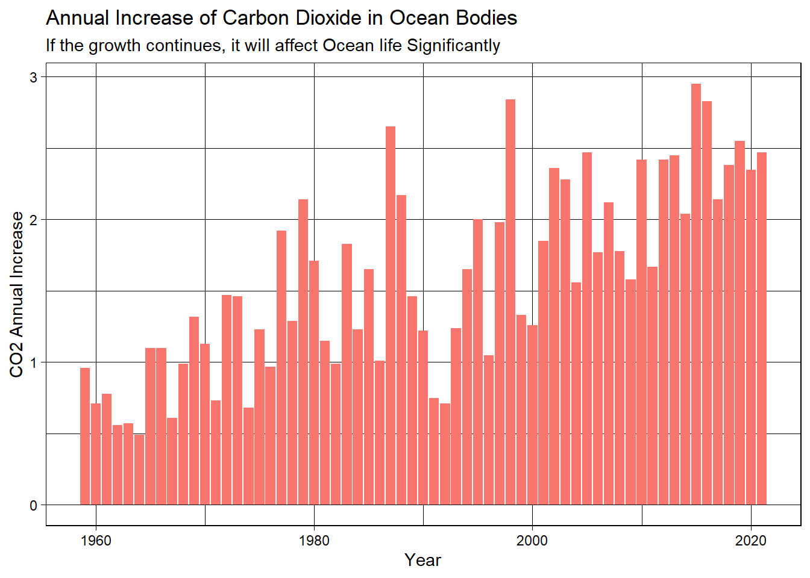

Marine Life
Global CO2 Emmisions
CO2 concentration in Ocean Bodies

Ocean acidification: As CO2 dissolves in seawater, it reacts with water to form carbonic acid, which lowers the pH of the water. This process is known as ocean acidification. Lower pH levels can make it more difficult for marine organisms, such as corals, mollusks, and some plankton, to build and maintain their shells and skeletons, which can have cascading effects throughout the food web.